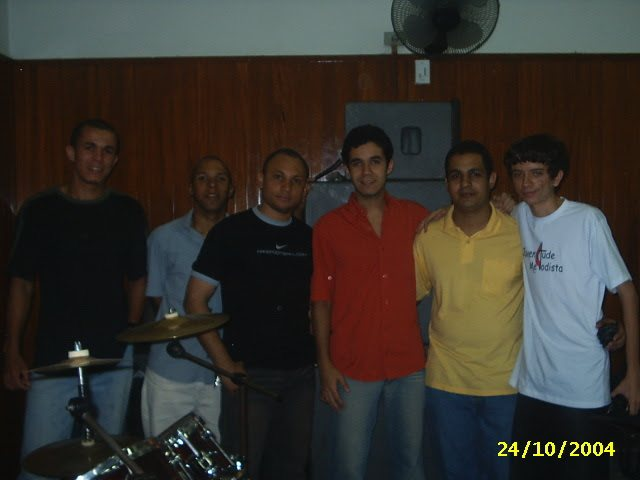
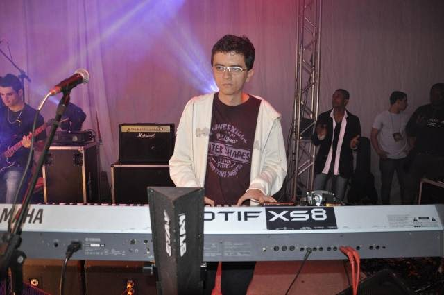
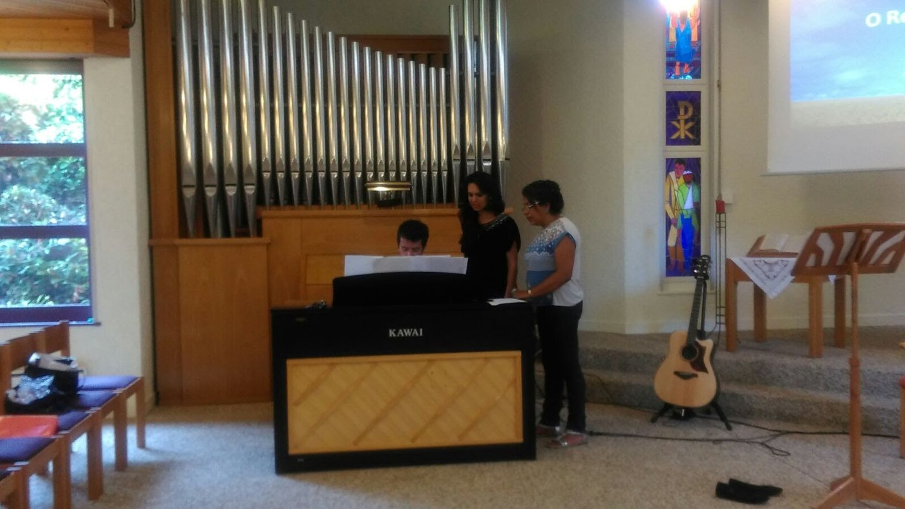
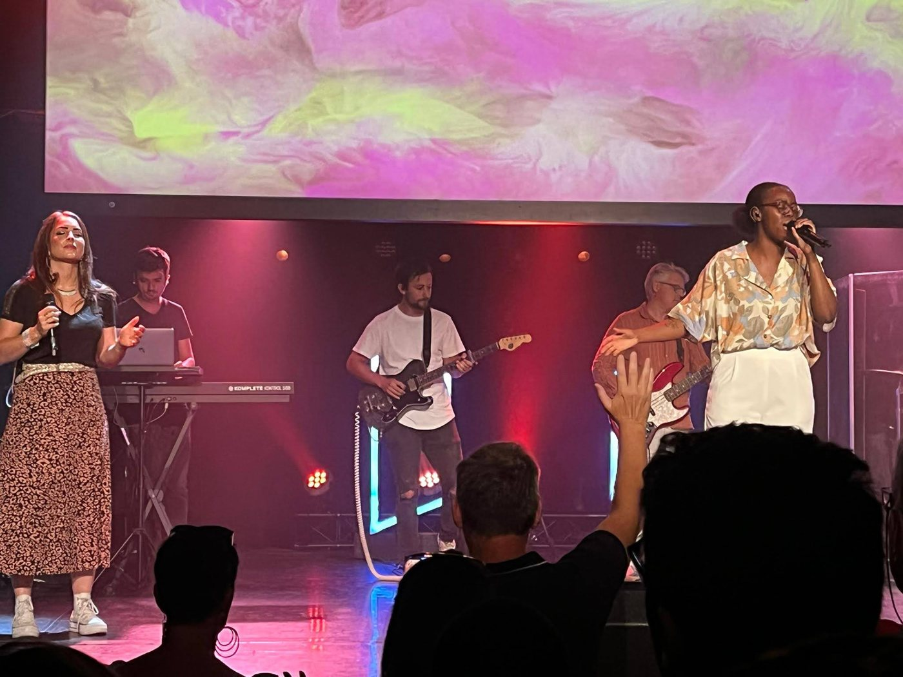
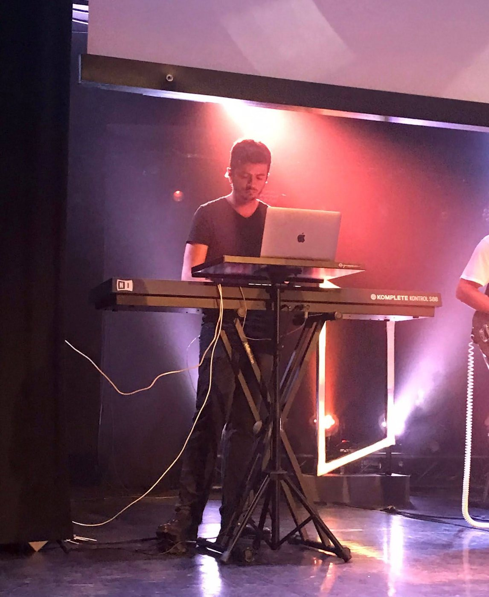
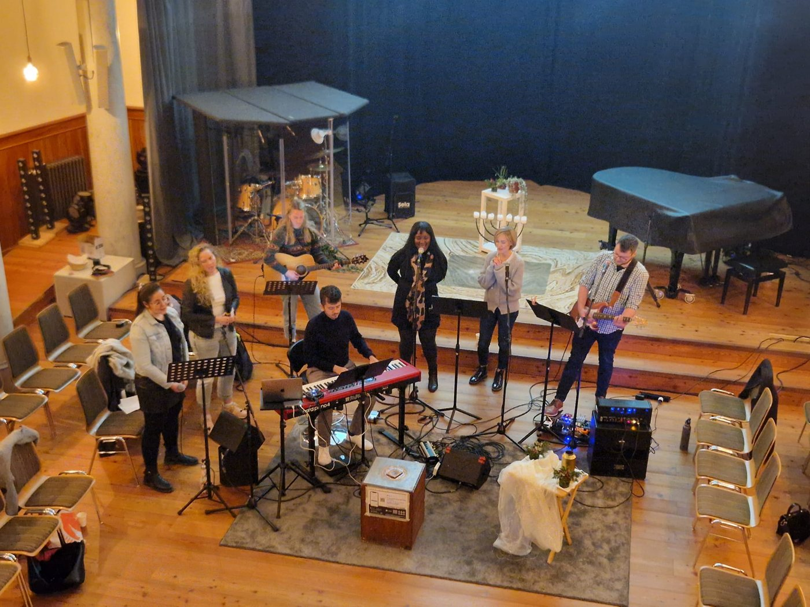
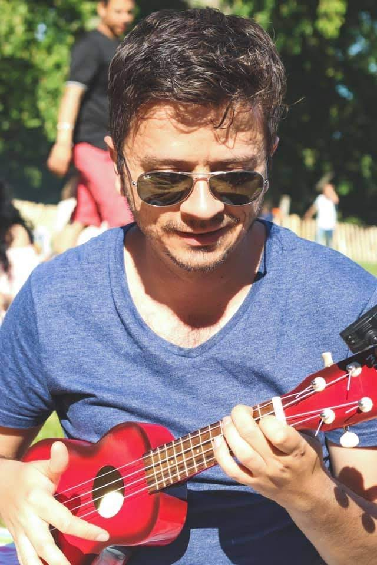
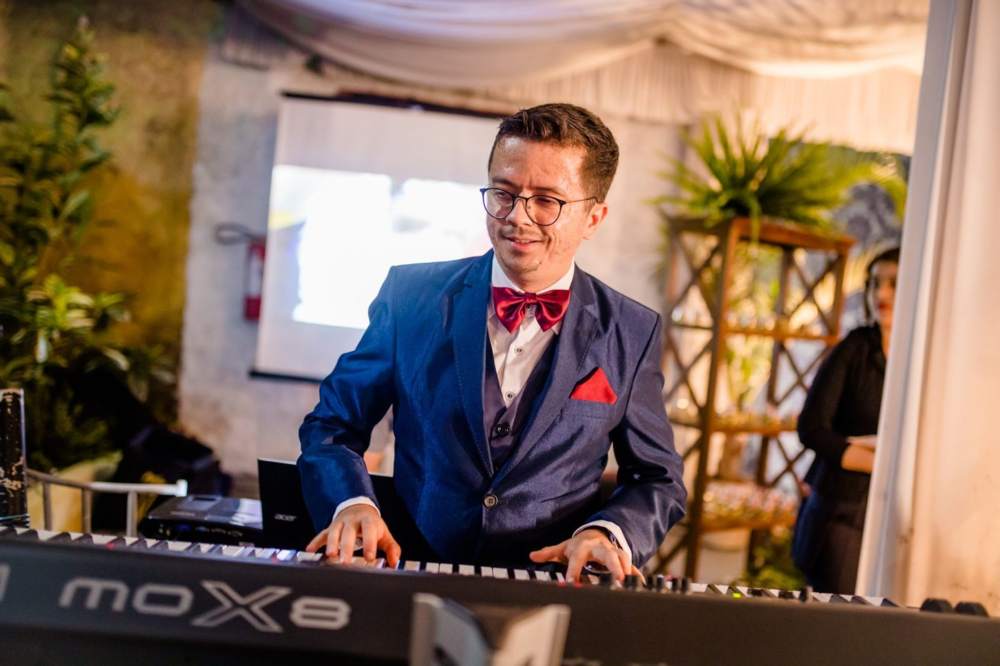
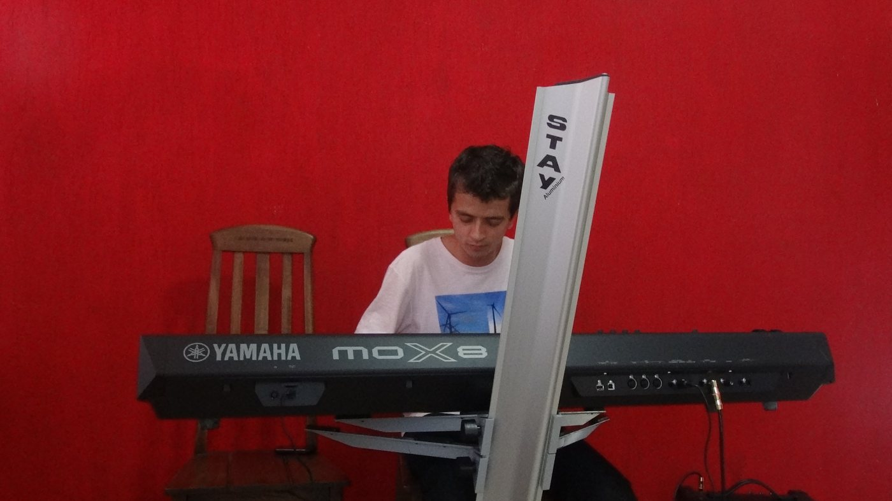
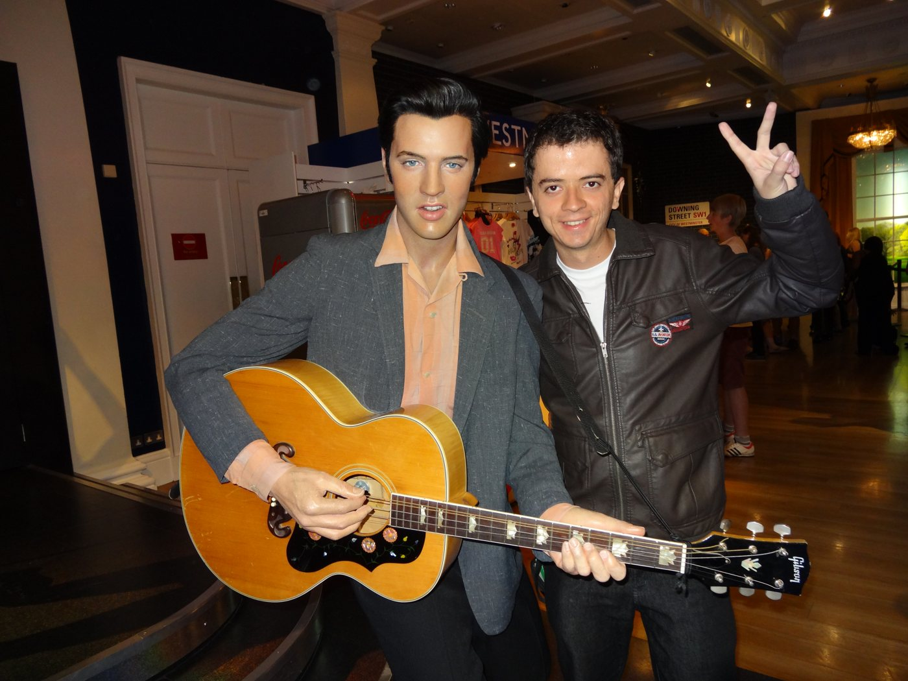

From a handwritten chord sheet to a worship team in GenevaDe uma folha de acordes escrita à mão a um grupo de louvor em GenebraD'une feuille d'accords écrite à la main à une équipe de louange à Genève
I learned my first chords at about fourteen, on the keyboard of the Methodist church in Três Rios, my home town in Brazil. More than twenty years later I am still at the keys, now in Geneva.
A sheet of chords, written by hand
I started with the help of a great and faithful friend, Hugo Paulino, who taught me my first chords. He wrote every combination out for me by hand on a sheet of paper: major, minor, diminished and augmented, for each of the twelve notes.
With that sheet I began to play in the juvenis, the church's group for young teenagers. We rehearsed just before their service.
Aprendi meus primeiros acordes por volta dos catorze anos, no teclado da Igreja Metodista em Três Rios, minha cidade natal. Mais de vinte anos depois continuo nas teclas, agora em Genebra.
Uma folha de acordes, escrita à mão
Comecei com a ajuda do grande e fiel amigo Hugo Paulino, que me ensinou os primeiros acordes. Ele escreveu à mão, numa folha de papel, todas as combinações: acorde maior, menor, diminuto e aumentado, para cada uma das doze notas.
Com essa folha comecei a tocar no grupo de juvenis da igreja. Os ensaios eram logo antes do culto dos juvenis.
J'ai appris mes premiers accords vers quatorze ans, sur le clavier de l'église méthodiste de Três Rios, ma ville natale au Brésil. Plus de vingt ans après, je suis toujours au clavier, désormais à Genève.
Une feuille d'accords, écrite à la main
J'ai commencé avec l'aide d'un grand et fidèle ami, Hugo Paulino, qui m'a appris mes premiers accords. Il m'a écrit à la main, sur une feuille de papier, toutes les combinaisons : majeur, mineur, diminué et augmenté, pour chacune des douze notes.
Avec cette feuille, j'ai commencé à jouer dans le groupe des juvenis, les jeunes adolescents de l'église. Nous répétions juste avant leur culte.
The day I packed the keyboard away
The first time I was due to play, the song was Fico Feliz, by Aline Barros. At the rehearsal I did not think I was playing it well enough, so I put the keyboard away and did not take part in the service. My excess of care, and how much I demand of myself, were already showing.
With time I learned a little more each day, and little by little I took part more and more.
A guitar solo nobody ordered
One day there was no guitarist, and in the middle of a song I improvised the guitar solo on the keyboard, a Roland XP-50. It was completely unexpected. Leo, who ran the sound, had to run back to the mixing desk and push the volume up, because nobody imagined that the keyboard player who was still learning would try a guitar solo.
O dia em que guardei o teclado
Na minha primeira vez, a música era Fico Feliz, da Aline Barros. No ensaio achei que não estava tocando bem o bastante, então guardei o teclado e não participei do culto. Meu excesso de cuidado e minha autoexigência já apareciam ali.
Com o tempo aprendi cada dia um pouco mais e, aos poucos, fui evoluindo e participando mais e mais.
Um solo de guitarra que ninguém pediu
Um certo dia não havia guitarrista e, no meio de uma música, improvisei o solo de guitarra no teclado, um Roland XP-50. Foi totalmente inesperado. O Leo, que era o operador de som, teve que correr de volta para a mesa e aumentar o volume, porque ninguém imaginava que o tecladista que ainda estava aprendendo tentaria fazer um solo de guitarra.
Le jour où j'ai rangé le clavier
La première fois que je devais jouer, le chant était Fico Feliz, d'Aline Barros. À la répétition, j'ai trouvé que je ne le jouais pas assez bien ; j'ai donc rangé le clavier et je n'ai pas participé au culte. Mon excès de soin et mon exigence envers moi-même se montraient déjà.
Avec le temps, j'ai appris un peu plus chaque jour et, petit à petit, j'ai participé de plus en plus.
Un solo de guitare que personne n'avait commandé
Un jour, il n'y avait pas de guitariste et, au milieu d'un chant, j'ai improvisé le solo de guitare au clavier, un Roland XP-50. C'était totalement inattendu. Leo, qui s'occupait du son, a dû courir jusqu'à la table de mixage pour monter le volume : personne n'imaginait que le claviériste encore débutant tenterait un solo de guitare.

A song of my own, and a short singing career
Around that time I wrote a song. We performed it, and I ended up singing it on a stage in the street, in front of the Methodist church of Vila Isabel. My voice did not go very far, and I think that is when I understood that my career as a singer would not go far either.
Uma música minha, e uma curta carreira de cantor
Naquela época compus uma música. Nós a apresentamos, e acabei cantando num palco na rua, em frente à Igreja Metodista da Vila Isabel. Infelizmente minha voz não rendeu muito, e acho que foi ali que percebi que minha carreira de cantor não iria longe.
Un chant à moi, et une courte carrière de chanteur
À cette époque, j'ai composé un chant. Nous l'avons présenté, et je me suis retrouvé à le chanter sur une scène dans la rue, devant l'église méthodiste de Vila Isabel. Ma voix n'a pas porté bien loin, et je crois que c'est là que j'ai compris que ma carrière de chanteur n'irait pas loin non plus.
Não vale a pena buscar a alegria
entre as rochas que não veem luz.
Não vale a pena buscar a vitória
se sem Ti não vem o Rei.
RefrãoNão vale a pena viver sem o amor de Deus,
com Ele eu quero ser e em Sua paz viver.
E tudo que eu puder eu vou a Ele entregar,
a essência buscar e assim viver.
It is not worth looking for joy
among rocks that never see the light.
It is not worth looking for victory
if without You the King does not come.
It is not worth living without the love of God;
with Him I want to be, and in His peace to live.
And all that I can, I will hand over to Him,
to seek the essence, and so to live.
Il ne vaut pas la peine de chercher la joie
parmi les rochers qui ne voient pas la lumière.
Il ne vaut pas la peine de chercher la victoire
si, sans Toi, le Roi ne vient pas.
Il ne vaut pas la peine de vivre sans l'amour de Dieu ;
avec Lui je veux être, et dans Sa paix vivre.
Et tout ce que je pourrai, je le Lui remettrai,
chercher l'essentiel, et vivre ainsi.
Eighty-eight keys, and a drummer who was right
Years later we bought a Yamaha Motif with 88 keys, and it opened new possibilities. For a special appearance by two guest singers, I played a song with the keyboard's sampler in place of the drums. The song turned out really well, but the great Marlon Abreu was upset that we had replaced the drum kit with a digital sample.
Little did I know how right he was. The keyboard would never come close to the genius of my friend on the drums.
Festival do Milho
The Festival do Milho, the corn festival, is the biggest celebration of our church. I waited many years to take part, and my first and last chance came a few days before I boarded for Geneva. We played on a stage on the court of the CAER sports club in Três Rios, and for the first time the church had opened a passage between the club and the church, so that people could move easily between the two.
It was an incredible experience, and the fulfilment of a dream.
Oitenta e oito teclas, e um baterista que tinha razão
Anos depois a gente acabou comprando um Yamaha Motif de 88 teclas, que abriu novas possibilidades. Para uma participação especial de dois cantores convidados, toquei uma música com o sampler do teclado no lugar da bateria. A música ficou super legal, mas o grande Marlon Abreu ficou chateado por termos trocado a batera por um sampler digital.
Mal sabia eu que ele estava redondamente certo. O teclado nunca chegaria aos pés da genialidade do meu amigo na batera.
Festival do Milho
O Festival do Milho é a maior festividade da nossa igreja. Esperei muitos anos para participar, e minha primeira e última chance veio poucos dias antes do meu embarque para Genebra. Tocamos num palco dentro da quadra do clube esportivo CAER, em Três Rios, e pela primeira vez a igreja tinha aberto uma passagem entre o clube e a igreja, para facilitar a circulação das pessoas entre os dois ambientes.
Foi uma experiência incrível, a realização de um sonho.
Quatre-vingt-huit touches, et un batteur qui avait raison
Des années plus tard, nous avons acheté un Yamaha Motif à 88 touches, qui a ouvert de nouvelles possibilités. Pour la participation spéciale de deux chanteurs invités, j'ai joué un chant avec le sampler du clavier à la place de la batterie. Le résultat était vraiment réussi, mais le grand Marlon Abreu était contrarié que nous ayons remplacé la batterie par un échantillon numérique.
J'étais loin de me douter à quel point il avait raison. Le clavier n'arriverait jamais à la cheville du génie de mon ami à la batterie.
Festival do Milho
Le Festival do Milho, la fête du maïs, est la plus grande fête de notre église. J'ai attendu de nombreuses années pour y participer, et ma première et dernière occasion est arrivée quelques jours avant mon départ pour Genève. Nous avons joué sur une scène installée sur le terrain du club sportif CAER, à Três Rios, et pour la première fois l'église avait ouvert un passage entre le club et l'église, pour que les gens circulent facilement entre les deux.
Ce fut une expérience incroyable, la réalisation d'un rêve.

Geneva: the Methodist church in Onex
I arrived in Geneva on 9 September 2011 and visited the Methodist church in Onex on my very first weekend. That same year I was already playing the piano at the services. In 2014 I started coordinating the worship team, and in 2016 I was elected president of the Portuguese-speaking Methodist community there.
Geneva also brought me musicians I admire. I have played several times with my friend Luciano Andrade, a brilliant musician with a gift for improvising Brazilian popular music. Katie Vincent, an incredible singer with a memorable career, gave me the pleasure of a duet at the church in Onex on my birthday. I have also played with friends such as Jacqueline, Mylena and many more.
Genebra: a Igreja Metodista de Onex
Cheguei a Genebra em 9 de setembro de 2011 e visitei a Igreja Metodista de Onex já no meu primeiro fim de semana. Naquele mesmo ano eu já tocava piano nos cultos. Em 2014 comecei a coordenar o grupo de louvor e, em 2016, fui eleito presidente da comunidade metodista de língua portuguesa de lá.
Genebra também me trouxe músicos que admiro. Toquei algumas vezes com meu amigo Luciano Andrade, músico genial, com uma habilidade incrível para improvisar música popular brasileira. Katie Vincent, uma cantora incrível e com uma carreira memorável, me deu o prazer de tocar um dueto na igreja de Onex no meu aniversário. Também toquei com amigos como a Jacqueline, a Mylena e muitos outros.
Genève : l'église méthodiste d'Onex
Je suis arrivé à Genève le 9 septembre 2011 et j'ai visité l'église méthodiste d'Onex dès mon tout premier week-end. La même année, je jouais déjà du piano pendant les cultes. En 2014, j'ai commencé à coordonner l'équipe de louange et, en 2016, j'ai été élu président de la communauté méthodiste lusophone du lieu.
Genève m'a aussi fait rencontrer des musiciens que j'admire. J'ai joué plusieurs fois avec mon ami Luciano Andrade, musicien génial, doué d'un talent rare pour improviser la musique populaire brésilienne. Katie Vincent, une chanteuse incroyable à la carrière mémorable, m'a fait le plaisir d'un duo à l'église d'Onex le jour de mon anniversaire. J'ai aussi joué avec des amis comme Jacqueline, Mylena et bien d'autres.

Hillsong Geneva
Shortly before the pandemic I decided to look for a new church, and I joined Hillsong in Geneva, where I am part of the worship team to this day. I learn a lot from every member of a church that welcomed me very well, and it is a pleasure to belong to this group.
Recently we played at Hillsong in Lausanne, in a special worship night of about twenty songs.
Hillsong Genebra
Pouco antes da pandemia decidi procurar uma nova igreja e acabei me juntando à Hillsong em Genebra, onde até hoje participo do grupo de louvor. Aprendo muito com cada membro da igreja, que me recebeu muito bem, e é um prazer fazer parte deste grupo.
Recentemente tocamos na Hillsong em Lausanne, num louvorzão especial com cerca de vinte músicas.
Hillsong Genève
Peu avant la pandémie, j'ai décidé de chercher une nouvelle église et j'ai rejoint Hillsong à Genève, où je fais partie de l'équipe de louange jusqu'à aujourd'hui. J'apprends beaucoup de chaque membre de cette église qui m'a très bien accueilli, et c'est un plaisir de faire partie de ce groupe.
Récemment, nous avons joué à Hillsong Lausanne, lors d'une soirée de louange spéciale d'une vingtaine de chants.


Off stage
Not everything happens on a platform. There is a red ukulele that comes along to parks and living rooms, a keyboard that follows me to parties, and a piano wherever I happen to find one.
Fora do palco
Nem tudo acontece num palco. Há um ukulele vermelho que vai comigo a parques e salas de estar, um teclado que me acompanha nas festas e um piano onde quer que eu encontre um.
Hors de scène
Tout ne se passe pas sur une estrade. Il y a un ukulélé rouge qui me suit dans les parcs et les salons, un clavier qui m'accompagne aux fêtes, et un piano partout où j'en trouve un.





The short version
A versão curta
En bref
- Três RiosFirst chords from Hugo Paulino's handwritten sheet, then the keyboard of the youth group at the Methodist church.Primeiros acordes com a folha escrita à mão pelo Hugo Paulino, depois o teclado do grupo de juvenis na Igreja Metodista.Premiers accords avec la feuille manuscrite de Hugo Paulino, puis le clavier du groupe de jeunes à l'église méthodiste.
- Festival do MilhoA dream fulfilled on the stage of the church's biggest celebration, a few days before leaving for Geneva.Um sonho realizado no palco da maior festividade da igreja, poucos dias antes de embarcar para Genebra.Un rêve réalisé sur la scène de la plus grande fête de l'église, quelques jours avant le départ pour Genève.
- OnexPianist at the Methodist church in Onex from my first months in Geneva.Pianista na Igreja Metodista de Onex desde os meus primeiros meses em Genebra.Pianiste à l'église méthodiste d'Onex dès mes premiers mois à Genève.
- Worship teamGrupo de louvorÉquipe de louangeCoordinating the worship team in Onex. In 2016, president of the Portuguese-speaking Methodist community.Coordenação do grupo de louvor em Onex. Em 2016, presidente da comunidade metodista de língua portuguesa.Coordination de l'équipe de louange à Onex. En 2016, président de la communauté méthodiste lusophone.
- HillsongOn keys in the worship team of Hillsong Geneva, to this day.Nos teclados do grupo de louvor da Hillsong Genebra, até hoje.Aux claviers dans l'équipe de louange de Hillsong Genève, jusqu'à aujourd'hui.
Thank you to Hugo Paulino for the first chords, to Leo at the mixing desk, to Marlon Abreu on the drums, to Luciano Andrade, Katie Vincent, Jacqueline and Mylena, and to everyone I have shared a stage with in Três Rios, Onex, Geneva and Lausanne.
Obrigado ao Hugo Paulino pelos primeiros acordes, ao Leo na mesa de som, ao Marlon Abreu na batera, ao Luciano Andrade, à Katie Vincent, à Jacqueline e à Mylena, e a todos com quem dividi um palco em Três Rios, Onex, Genebra e Lausanne.
Merci à Hugo Paulino pour les premiers accords, à Leo à la table de mixage, à Marlon Abreu à la batterie, à Luciano Andrade, Katie Vincent, Jacqueline et Mylena, et à tous ceux avec qui j'ai partagé une scène à Três Rios, Onex, Genève et Lausanne.